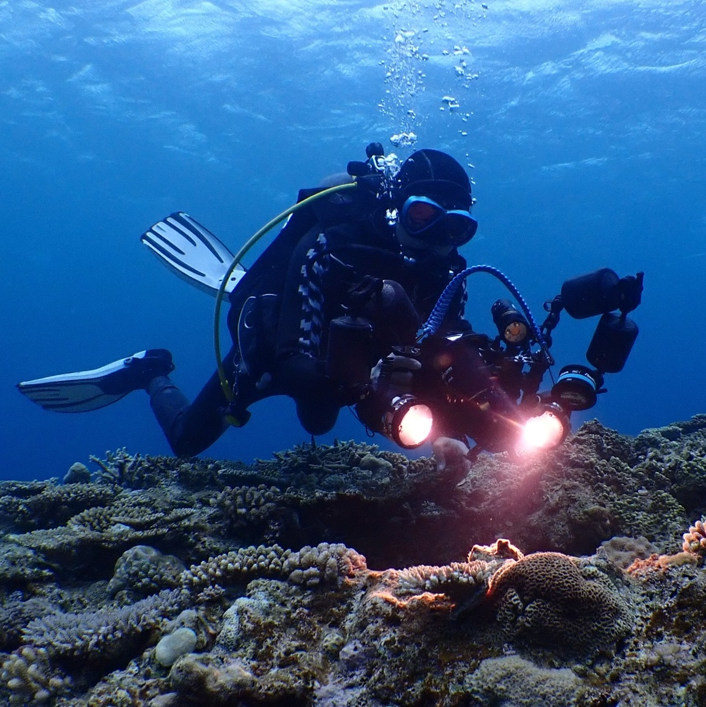

About

Signs, not symptoms
In medicine, a symptom is what a patient reports; a sign is what an observer can see. Corals report nothing. By the time a reef turns white, the signs have usually been in the water for weeks. Signs of the Sea reads those signs at seven Japanese reefs, every day.
What the site does
- Daily rounds. Sea temperature, departure from normal, accumulated heat stress (DHW) and days above 30 °C at seven sites, from Kushimoto in Wakayama to Sekisei Lagoon in the Yaeyama Islands. Updated automatically from satellite data.
- Forecasts. A summer bleaching outlook for Onna, Okinawa, and the next coral spawning, predicted to the minute.
- Scorecards. Predictions are published in advance and checked afterwards, misses included. In 2026 the spawning time was within 15 minutes, and the peak night was two days off (2026 record).
Who writes it
I am Hiroki Fukui, a physician in Tokyo, and I dive more than a hundred times a year. Clinical work keeps returning to one question: does a diagnostic criterion measure what it claims to? I put the same question to coral reef science. The answer, published in Frontiers in Marine Science (2026), is that the standard satellite indicator of bleaching stress loses its grip in the warmest waters, where about 63% of the world's reef area lies. Papers and code are on the Publications page. ORCID 0009-0008-7122-522X.
Onna, summer 2024
In the summer of 2024 I dove in Onna, Okinawa. The coral was white, not in patches but across whole reefs. Corals that local people had farmed and replanted for years were almost all gone. I had seen the graphs for years, and they had never changed what I did. This did.
Divers feel these changes, but what they see stays an impression, shared over dinner and gone by the next dive. This site tries to turn it into a record.
Data and methods
- Sea surface temperature: NASA JPL MUR SST v4.1 (1 km, daily).
- Heat stress: DHW following Lachs et al. (2021), using an 8-week window with no 1 °C cutoff. This runs higher than NOAA Coral Reef Watch's operational product (12 weeks, ≥1 °C above MMM). Where NOAA values are quoted, they are labelled as such.
- Coral surveys: Monitoring Site 1000, Ministry of the Environment, Japan (Biodiversity Center of Japan), used under permit. The data are not redistributed here.
- Climate indices: NOAA CPC (ONI).
- Code: GitHub. Full source list on the Data sources page.
Independence
This is a non-commercial, independent project, with no ads and no sponsors. Corrections are welcome through the contact page.
海洋の徴候について
症状ではなく、徴候
医学では、本人が訴えるものを「症状」、観察する側が見て取るものを「徴候」と呼んで区別する。サンゴは何も訴えない。礁が白くなるころには、徴候はたいてい何週間も前から水温に出ている。海洋の徴候は、日本の7つのサンゴ礁で、その徴候を毎日読んでいる。
このサイトがしていること
- 毎日の回診：串本から石西礁湖までの7地点について、水温、平年差、積算熱ストレス（DHW）、30℃を超えた日数を、衛星データから毎日自動で更新している。
- 予測：恩納村の夏の白化の見通しと、次のサンゴ産卵を分単位で出している。
- 答え合わせ：予測は事前に公開し、外れも含めて事後に採点する。2026年の産卵は、時刻は15分以内で当たり、ピークの夜は2日ずれた（2026年の記録）。
書いている人
東京の医師で、国内外の海に年間100本以上潜っている。臨床では「この診断基準は、本当に測りたいものを測っているのか」という問いに繰り返し戻ってくる。同じ問いを海に向けた結果が、2026年に Frontiers in Marine Science に出た論文になった。白化予測の世界標準の指標は、いちばん暖かい海で力を失う。そして、世界のサンゴ礁の約63%がその海にある。論文と解析コードは研究成果のページにまとめている。ORCID 0009-0008-7122-522X
2024年、恩納村で見たもの
2024年の夏、恩納村の海に潜った。サンゴが白かった。一部ではなく、礁ごと白かった。地元の人々が長年かけて育て、植え付けてきたサンゴも、ほぼ全滅していた。
白化のグラフは何年も前から見ていたが、それで私の行動が変わることはなかった。変わったのは、自分の目で見たあとだった。
ダイバーは変化を感じている。けれど、それはダイビング後の食事の席で交わされて終わる。このサイトは、その感覚を記録に変える試みである。
データと方法
- 海面水温：NASA JPL MUR SST v4.1（1km、日別）
- 熱ストレス：DHW は Lachs ほか（2021）に従い、8週間で積算し、1℃の足切りを置かない。そのため NOAA Coral Reef Watch の公式値（12週間、平年より1℃以上の分だけを積算）より大きめに出る。NOAA の値を引用するときは、その旨を明記する。
- サンゴ調査：環境省モニタリングサイト1000（生物多様性センター）。利用許可を得て使っており、データの再配布はしていない。
- 気候指数：NOAA CPC（ONI）
- コード：GitHub。出典の一覧はデータソースのページにある。
運営方針
非営利の個人プロジェクトで、広告とスポンサーは受けていない。誤りの指摘は、お問い合わせページから歓迎する。